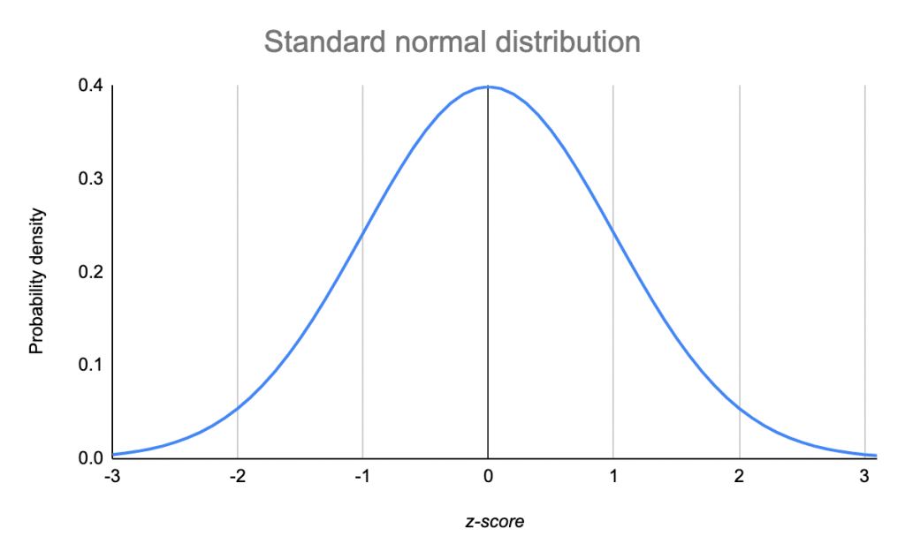
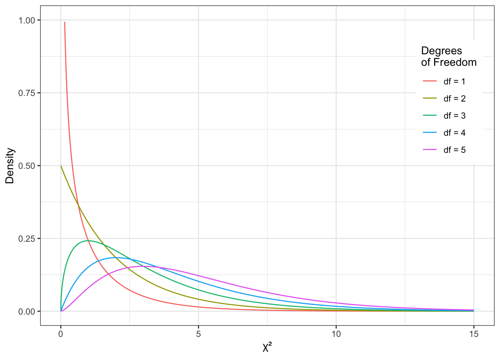
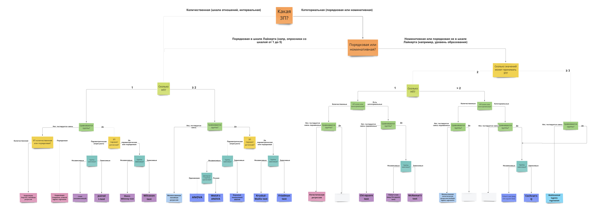
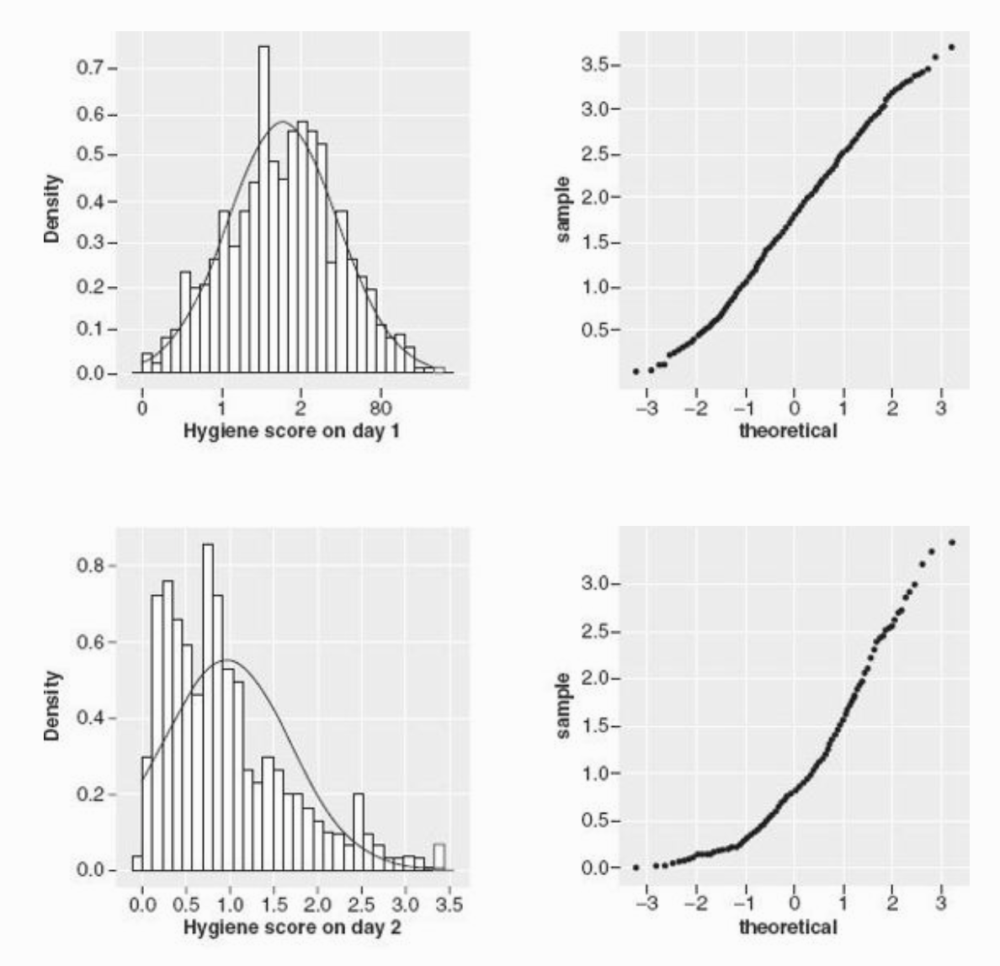

9 Статистические критерии
Статистическим критерием называется правило, по которому мы будем пытаться отвергнуть нулевую гипотезу. Разным гипотезам и данным подходят разные критерии.
Статистический критерий включает:
- Теоретическое распределение, на графике плотности вероятности которого мы будем располагать сравниваемые средние: вид кривой и математическая формула этого вероятностного закона (Т-распределение, F-распределение, \(\chi^2\)-распределение и другие)
- Формулу, по которой мы будем рассчитывать искомое значение критерия (как уже рассчитывали \(Z_{Mмаленькие}\)) исходя из наших данных на выборке для Z-оценки)
- Cоответствие каждого посчитанного по этой формуле значения (например, Z-значения или Т-значения) проценту данных, расположенных за этим значением на графике плотности вероятности этого распределения (мы не будем пользоваться такими таблицами соответствий, за нас все считают бесдушные машины)
- Формулу для рассчета числа степеней свободы для этого критерия
9.1 Степени свободы
Число степененй свободы (Degrees of Freedom, df) – количество направления для изменения признака. Формула для расчета степеней свободы своя для каждого статистического критерия (нам не нужно рассчитывать самостоятельно) и зависит, собственно, от вида статистического критерия, дизайна нашего исследования (сколько сравнений мы проводим) и числа наблюдений в выборке.
Для t-критерия число степеней свободы высчитывается очень просто: \(df = n_1 -1 + n_2 - 1 = n_1 + n_2 - 2\)
9.2 Ключевые распределения и статистики критериев (Z, T, F)
Z-распределение
В прошлый раз мы рассмотрели пример, когда сравнивали среднее время, которое проводят родители с детьми, в больших и маленьких городах, и сравнивали эти значения на примере [Z-распределения] {stat_test_example): мы получали Z-статистику и находили соответствующий распределению Z-оценок процент данных для найденной точки.

\(Z = \frac{M - \mu}{\frac{\sigma}{\sqrt{n}}} = \frac{M - \mu}{\frac{sd}{\sqrt{n}}}\)
Это самый простой вариант критерия для проверки статистических гипотез – но не единственный. На самом деле, в качестве распределения, на которое мы помещаем точки (средние) и сравниваем их друг с другом, могут быть и другие, в зависимости от характера наших данных. Рассмотрим основные из них.
https://gallery.shinyapps.io/dist_calc/
T-распределение Стьюдента

Как мы видим, оно очень похоже на Z-распределение, но у него чуть более приподнятые хвосты.
Формула, которой задается вероятностный закон Т-распределения Стьюдента:

Негласно считается, что при объеме выборки от n=30 t-распределение считается близким к Z-распределению, которе является нормальным, и можем использовать его. Но в реальности это не совсем так.
Формула для расчета T-значения исходя из наших данных:
\(t = \frac{M_1 - M_2}{\frac{sd_{1;2}}{\sqrt{n_{1;2}}}} = \frac{M_1 - M_2}{\sqrt{\frac{sd_1^2}{n_1} + \frac{sd_2^2}{n_2}}}\)
F-распределение

\(\chi^2\)-распределение

9.3 Выбор статистического критерия
Вопросы, которые влияют на выбор статистического теста:
- Зависимая переменная: количественная (интервальная шкала или шкала отношений) или категориальная (номинативная или порядковая шкала)?
- Если ЗП количественная – она описывается параметрическим (чаще всего нормальным) распределением? (определяется чаще “на глаз” по графику плотности вероятности или QQ-графиками, тесты на нормальность почти всегда будут давать негативный результат из-за чувствительности и поэтому в современном анализе данных используются мало – подробнее чуть ниже)
- Сколько независимых переменных?
- НП количественные (интервальная и шкала отношений) или категориальные (номинативная и порядковая)?
- Если НП категориальные и мы сравниваем группы – данные в группах зависимы или нет? Если нет, как сильно отличаются данные в группах, можем ли сказать, что дисперсия ЗП примерно одинакова в группах или нет? (равенство дисперсий называется Homogeneity of Variance, проверяется с помощью Levene’s test)
Есть большое количество схем, но обычно они сильно перегруженны и сложны в использовании, больше путают, чем помогают.
Но я зачем-то все равно решила попробовать нарисовать свою, и вот результат: https://miro.com/app/board/uXjVOxmKhr8=/?share_link_id=245423331470 (будет обновляться)

9.3.1 Параметрические и непараметрические критерии
В списке вопросов, которые влияют на выбор статистического критерия, вторым пунктом идет вопрос о параметрике. Что это значит?
Под параметрическими распределением имеется в виду любое распределение, которое можно описать законом. Вспоминаем: закон распределения – это формула, по которой можем привести любому числу вероятность встретить такое значение в природе (разбирали это в теме про распределения ). В этой формуле есть параметры – неизвестные переменные, которые мы стремимся узнать. Для нормально распределения это среднее генерально совокупности (математическое ожидание) и стандартное отлокнение генеральной совокупности. Посмотрим еще раз на формулу нормального распределения и найдем их: \(P(x) = \frac{e^{-(x - \mu)^{2}/(2\sigma^{2}) }} {\sigma\sqrt{2\pi}}\)
Вспомним еще, что признаки, которые мы исследуем в психологических исследованиях, являются в основном случайными величинами, а при большом объеме данных случайные величины, согласно центральной предельной теореме, распределены нормально. Поэтому в исследования психологических признаков под параметрическим распределением обычно имеется в виду одно конкретное распределение – нормальное.
Если переменная, которая выражает исследуемый признак, распределена нормально, то мы можем применять для ее изучения параметрические статистические критерии, предполагающие нормальное распределение данных: т-тест, ANOVA. Если переменная распределна не нормально, то нужно использовать их непараметрические аналоги: тест Манна-Уитни или Вилкоксона, тест Краскела-Уоллиса.
Проверка на нормальность – довольно устоявшаяся в алгоритме проверки гипотез рутина. Но есть один нюанс.
- При малом объеме данных сложно понять, как распределены данные, нормально или нет.
- При большой объеме данных любое, даже малейшее отклонение от нормального распределения будет значимым.
Поэтому в современной культуре исследований проверке на нормальность уже не отводится такое сакральное значение. Важнее, например, оперировать размером выборки: если она достаточно большая (можем вернуться к эмприческому правилу к n >= 30), то достаточно взлянуть на распределение данных и QQ-plot, и если они не вызывают подозрений, смело использовать параметрические методы. Если выборка маленькая или если данные при большой выборке явно сильно отличаются от колоколообразной гауссианы, то лучше использовать a) непараметрические аналоги б) обобщенные линейные модели (про них поговорим позже).
Итак, я бы не рекомендовала делать тщательную проверку на нормальность вроде теста Колмогорова-Смирноова или Шапиро-Улика (хотя можно их считать, это не возбраняется), а оценить принадлежность к параметрическому (в данном случае нормальному) распределению следующим образом:
- График плотности вероятности или гистограмма: симметричность и эксцесс обсуждали их тут
- QQ-plot
 Графики из книжки Энди Филда “Discovering Statistics Using R”
Верхняя строка графиков показывает, как могут выглядить графики в случае близкого к норрмальному распределению: гистограмма или график плотности вероятности зависимой переменной похож на колоколообразную гауссиану, на QQ-плоте теоретические квартили почти соответствую фактическим на данных – чем больше этот график похож на прямую линию y = x, тем лучше.
Нижняя строка графиков показывает обратную историю, как могут выглядить визуализации распределения ЗП, которую мы НЕ будем считать нормально распределенной: график плотности и вероятности и гистограмма сильно скошенны влево, QQ-плот уже мало похож на прямую.
9.3.2 Зависимые и независимые выборки
Еще один пункт при выборе статистического критерия – это зависимые у нас наблюдения или нет. Мы обсуждали зависимые и независимые выборки вначале. Теперь это знание пригодится нам, чтобы правильно подбирать статистический метод.